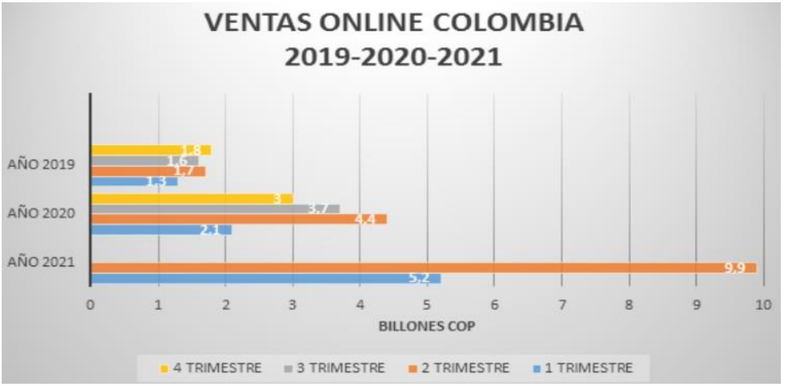

Introducción
Actualmente estamos viviendo en una era donde el internet se ha convertido en una
prioridad para el ser humano lo que conlleva a estar cada vez más interconectados a nivel mundial, esto ha
sido posible en virtud a la globalización tecnológica. la cual ha conducido que el comercio
de bienes y servicios por medio de canales físicos cambiará. En este sentido se dio la necesidad de
crear y desarrollar en comercio electrónico, aquel comercio que está a disposición las 24 horas del
día, ese mismo que tiene capacidad de acaparar todos los mercados globales, y el cual se puede dar
comienzo con una inversión menor al comercio tradicional o también llamado comercio offline.
Teniendo en cuenta a Micó Micó, Andrea Alexandra. (2019), menciona que con el paso del
tiempo el comercio tradicional, se ha visto perjudicado a raíz del crecimiento del comercio
electrónico, por ello se ha ido transformando de manera de adaptarse a las necesidades de los
consumidores. Lo que conlleva a las empresas o diversos modelos de negocios a reestructurarse
en la digitalización, específicamente en el comercio web. Los obliga a implementar diferentes
alternativas no solo en el mercado off-line (fuera de internet) sino también on-line (dentro de
internet).
Por otra parte, Ramos, E. M. H., & Barrueco, L. C. H. (2018). En su libro “Manual del
comercio electrónico”, exponen que el término de comercio electrónico se define como una
herramienta instaurada en todo el terreno comercial. Ahora bien, para que se desempeñe con éxito,
las empresas y profesionales que han de gestionarlo deben conocer los elementos y procesos clave
que intervienen en una actividad comercial. Al mismo tiempo teniendo en cuenta a (Libu, et al.,
2016), el cual argumenta que la acogida del comercio web en el ámbito empresarial a nivel global
tiene un aumento continuo, no obstante, en tanto que las organizaciones potencian su tamaño, el
comercio electrónico se convierte cada vez más difícil y desafiantes. Ahora bien, siendo cada vez
más complejo la entrada de las empresas a este ámbito debe dejar de ser visto como un impedimento
u obligación y empezar a ser visto como un valor agregado que le aportan a la empresa.
Como complemento a lo expuesto anteriormente, (Gutiérrez y Nava, 2016; Erum, Rafique
y Ali, 2017) Da a conocer que el sector empresarial en su mayoría está compuesto por PYMEs las
cuales componen una fuente significativa de empleo y de ingresos significativa, ante todo para
aquellas economías en vía de desarrollo, por consiguiente es importante que en nuestra región de
norte de Santander; específicamente el municipio de Cúcuta los empresarios acogen la iniciativa
de incorporarse en el comercio digital para potenciar su participación en el mercado a nivel
mundial, generando cambios bastante significativos en el ámbito empresarial trayendo un crecimiento
económico el cual no solo es beneficioso para nuestra región sino también a nivel
país.
El desarrollo del comercio electrónico no es igual a nivel mundial ya que su adopción es
cambiante conforme el territorio geográfico muchos tienen una inestabilidad digital, en especial en
américa latina y el caribe donde existe atraso en avances de la creación de infraestructura y falta
de adquisición de servicios de internet, lo que provoca falta de cubrimiento del acceso a la red en
regiones apartadas donde su población es vulnerable. Partiendo de los supuestos anteriormente
mencionado se produce la brecha digital, en otras palabras, es la desigualdad en el uso e impacto
de las tecnologías de información y comunicación como lo son el acceso a internet y a la telefonía
móvil. Sin embargo, en nuestro territorio colombiano más del 65% de habitantes tiene acceso a
internet según base del ministerio de tecnología y las comunicaciones de Colombia (MINTIC), por
lo mismo el crecimiento del comercio electrónico ha sido significativo.
A través de la revisión documental hemos podido ver que el comercio electrónico ha
demostrado ser una herramienta clave para la productividad y que ayuda a la reducción de costos
y a su misma vez amplía el mercado. en este mismo sentido analizamos como en las micro,
pequeñas y medianas empresas realizan la implementación de las actividades en línea, pero también
existe cierto tipo de empresas que aún desconocen de la existencia de la nuevas tecnología y optan
por comercializar tradicional; en el municipio de Cúcuta es por eso, que con este artículo se busca
analizar estrategias que se enfocan en convencer a esas empresas que aún no forman parte de esta
era digital; mostrándole lo beneficioso que puede llegar a ser y cómo atraer a posibles clientes de
manera masiva . Se dice que cualquier empresa que no maneje el comercio electrónico e innove
está expuesta a extinguirse o desaparecer en el mercado.
Metodología
El presente artículo a través de una revisión bibliográfica con base de datos confiables
como: scielo, dialnet, google académico, revistas científicas y repositorios nacionales e
internacionales con un enfoque en temas acordes a nuestro artículo bajo el parámetro de comercio
electrónico o a fines, de los cuales se realizó una matriz del estado del arte con treinta referencias.
Seguido a lo anterior se establece que tiene una metodología cualitativa de tipo descriptiva
documental ya que como lo expresa Sampieri (2018), un proyecto tiene investigación descriptiva porque busca
principalmente la expansión contextualizada del ambiente o entorno, aportando un
punto de vista completo de los fenómenos.
Revisión literaria
Según Traver K. C. (2018), difiere que el comercio electrónico o también conocido como
e-commerce puede ser descrito como el mundo que empezó a tener vida y después se perjudicó por
la caída que tuvo la bolsa de valores en el periodo de tiempo del 2000 y 2001. Ahora bien, los que
no desertaron y tuvieron fe, evolucionaron en un ámbito que se hizo más fuerte y menos costoso.
Luego del lapso en el periodo del 20002-2008 el comercio electrónico tuvo un crecimiento de más
del 25%.
La organización mundial del comercio (OMC), define el comercio electrónico como “la
producción, distribución, comercialización, venta o entrega de bienes y servicios por medios
electrónicos” conforme a todas las definiciones que tiene el término de comercio electrónico, se
puede decir que en términos generales son todas aquellas transacciones de comercio que se llevan
a cabo por medio de una red de internet es decir con solo dar un clic, aquella red pública a la que
mayor parte de personas tiene acceso.
Competencia en el comercio electrónico
Según (procolombia,2021), el comercio electrónico ha venido adquiriendo posicionamiento
como la red de negocios imperante, a tal punto de destacar a las empresas de ventas online como
es el caso de AMAZON, ALIBABA, ALIEXPRESS; las cuales lideran el ranking de empresas con
mayores ingresos. Por otro lado, la pandemia del covid-19 ha tenido un gran impacto en el impulso
de las ventas en línea.
Tipos de comercio electrónico
Robayo-Botiva, D. M. (2020). Nos expone que el comercio electrónico puede tomar
diferentes tipos esto el cual depende del grado de digitalización del bien, el proceso de compra y
venta finalizado por la entrega.
El comercio electrónico parcial es aquel que algún proceso bien sea la compra, venta o
entrega no son por medios digitales; como, por ejemplo, se realiza la compra de un tiquete a través
de medios digitales el pago es por medio corresponsal bancario y la entrega del tiquete es
electrónico.
El business to commerce (B2C), es el que se da de empresa al consumidor final
El business to business (B2B), es aquel comercio de una empresa a otra.
El consumer to consumer (C2C), todo comercio que se establece de cliente a cliente.
Colombia: comercio electrónico
Según un estudio realizado por la cámara colombiana de comercio electrónico (2021), nos
da a conocer la totalidad de las ventas en un periodo de tiempo en el 2 trimestre del año 2021, el
cual se alcanzó los $9.95 miles de millones de pesos colombianos; lo que representa un aumento
con respecto al segundo trimestre del año 2020, y de él $86.3% al mismo trimestre del año 2019.
Figura 1. Ventas Online Colombia

Fuente: Cámara colombiana de comercio electrónico.
En norte de Santander el comercio electrónico ha adquirido un crecimiento bastante
significativo en lo corrido de los últimos años, dándose a conocer como una muy buena dinámica
de creciente desarrollo desenvolviéndose en el área empresarial, teniendo en cuenta la importancia
que representa el comercio electrónico en las empresas generando diferentes estrategias que
ayudan a atender necesidades, inculcando la cultura a las personas de lo seguro que es la compra y
venta vía internet, satisfacer posibles hábitos de compra de los clientes, entrar en nuevos segmentos
de cado uno de los mercados lo cual, nos lleva a conocer más oportunidades junto con sus ventajas
a la hora de un óptimo desarrollo empresarial.
Resultados
Los avances tecnológicos que han ido creándose y sus medios de comunicación nos ha
llevado a conocer sus distintas modalidades en el área de comercio. Esta modalidad es utilizada
para dar a conocer sus grandes variedades de estrategias que se deben llevar a cabo de y la manera
que ha evolucionado, dando a conocer los métodos para convencer y mantener a los clientes
atendiendo cada una de sus necesidades de manera confiable generando una gran ventaja
competitiva con sus posibles clientes.
El comercio electrónico es actualmente vital para las empresas ya que, ayuda al crecimiento
de las empresas y ser el futuro de ellas mismas, manteniéndose en nuevos mercados de manera
positiva para ello se tomó como soporte analizar algunas empresas de Cúcuta que hoy en día
desconocen o no implementan el mundo de la era digital y así poder dar a conocer los resultados
favorables que tiene e-commerce y que ventaja traerán a esas empresas con ayuda de esta
modalidad.
Según lo que se estableció en este proyecto se dice que con la creación de un sello de
confianza con el cliente se vio como resultados la presentación de la propuesta se dan a conocer
ciertas ventajas que ayudan a medianas y pequeñas empresas a implementar en el mundo de
comercio electrónico internacional de manera exitosa y mantenerse en el mercado
competitivamente. Se pretende que el sello de confianza sea creado por instituciones nacionales
del gobierno encargadas de garantizar seguridad y reconocimiento al punto de ser altamente
eficiente. Esta propuesta busca que los posibles consumidores en las empresas de Cúcuta tengan la
facilidad de acudir u orientarse a estos sistemas de manera sencilla a la hora de realizar el uso del
comercio electrónico.
Se encontró bajo el análisis que el comercio electrónico es una modalidad muy dinámica
que ha llevado con su desarrollo uno ventaja empresarial siendo reconocida en el mercado digital,
con esta se puede adquirir los productos de manera más rápida y segura llegando así a segmentar
el mercado de acuerdo al hábito consuma, hábito de compra y también llegar a satisfacer la
necesidad del cliente y tener en cuenta la experiencia de este mismo.
Discusión
Sabemos que el comercio electrónico no es solo una tendencia sino también una necesidad
para las empresas que buscan el crecimiento de sus emprendimientos y atraer nuevos mercados
tanto en el presente como en el futuro de los negocios.
A pesar que el comercio electrónico tiene muchos aspectos que apoya su crecimiento por
los beneficios que este genera tanto al vendedor como al comprador; también se enfrenta ante una
serie de aspectos que frenan este comercio en línea, como: desconfianza al proporcionar datos
personales, medios de pagos ya que generalmente solo aceptan tarjetas de crédito, resistencia al
pago de envío, deficiencia en los envíos (bien sea por demoras, desperfectos o equivocación),
prioridad a las compras físicas.
Por consiguiente, los avances del comercio electrónico en estos últimos años fue de manera
evidente ya que, con la crisis de pandemia del covid-19 aumentó de manera significativa y que por
medio de este acontecimiento se convirtió en un mecanismo de pago vital para el funcionamiento
de las empresas no solo virtuales sino también tiendas físicas muy reconocidas a nivel mundial ,
esto fue un hincapié a lo que se viene en nuestros próximos años pues una vez comienzas a
incursionar en el mundo de la era digital no hay vuelta atrás, debemos estar en constante cambio y
adaptarnos a los nuevos segmentos de mercados, captar a nuevos clientes y no estancarnos en
nuestra zona de confort por miedo o desconfianza al cambio como lo es comercio tradicional pues
este ya pasó a segundo plano y se evidencio que el e-commerce trajo beneficiosos altos y género
altas ganancias de una manera más eficaz.
Conclusiones
Se concluye, que en esta investigación es de suma importancia la presencia del comercio
electrónico en algunas empresas de norte de Santander ya sean medianas o pequeñas, viéndose
reflejado como en muchas empresas de nuestro municipio desconocen de su existencia y de los
beneficios que conlleva la compra y venta de productos y/o servicios, recurriendo a medios
electrónicos, el e-commerce tiene su base en ventas por catálogo que realmente surgieron como
una forma de asistir y abarcar a la mayor cantidad posible de público al ofrecer ciertos productos a
posibles clientes es por eso, que se debe crear un sello de confianza en donde se le garantice a las
empresas que carecen del uso de comercio electrónico que el impacto que tendrá será incursionar
exitosamente, mantenerse en el mercado y en caso de conflicto también brindar alternativas eficientes y a la
mano de quien lo vaya a implementar teniendo en cuenta que si se le da un buen
uso los resultados serán satisfactorios en sus negocios o ventas que lleven a cabo con la ayuda de
este mecanismo y de manera segura.
Por último pero no menos importante, no podemos pasar por alto que debido a la pandemia
el comercio electrónico pasó a ser fundamental a la hora de comercializar en cada una de las
empresas y lo tradicional pasó a segundo plano, es por eso que esta crisis sanitaria hizo
indiscutiblemente necesario el uso del mismo llegando así a que muchas empresas que desconocen
de e-commerce entrarán al mundo de la era digital dejando a un lado sus hábitos tradicionales y
desconfianzas a la hora de realizar una compra pues quien no estaba dispuesto a manejar estos
canales digitales iba tender a desaparecer en el mercado así que, podemos concluir que cada una
de las empresas existentes salieron de su zona de confort y le dieron la oportunidad a comercializar
de manera virtual de manera rápida ,segura y con excelente servicio entre vendedor y comprador.
Referencias
- Díaz Ydones, D. K., & Valencia Vásquez, B. S. (2015). Estudio exploratorio de la oferta de
comercio electrónico en un conjunto de micro y pequeñas empresas (mypes) localizadas
en diversos distritos de Lima Metropolitana.
https://tesis.pucp.edu.pe/repositorio/bitstream/handle/20.500.12404/6769/DIAZ_DAYSY_VALENCIA_BLANCA_ESTUDIO.pdf?sequence=1
- Encalada Muñoz, N. J. (2016). Estrategias de E-commerce para una empresa comercializadora de
juguetes y análisis del impacto de su aplicación en las empresas ecuatorianas.
http://repositorio.utmachala.edu.ec/handle/48000/9330
- Ferrari Zamora, V. (2017). El comercio electrónico en Colombia: barreras y retos de la
actualidad. https://repository.javeriana.edu.co/handle/10554/3649
- Forbes advertorial. (2021). Los colombianos cada vez más habituados al comercio en línea.
https://forbes.co/2021/09/29/tecnologia/los-colombianos-cada-vez-mas-habituados-alcomercio-en-linea/
- Gupta, D. C., Bindal, M., Agarwal, N., & Khandelwal, K. (2018). Traditional Commerce v/s
Ecommerce and Impact of Demonetization on E-commerce. International Journal of
Engineering and Management Research (IJEMR), 8(2), 136-142.
https://www.indianjournals.com/ijor.aspx?target=ijor:ijemr&volume=8&issue=2&article=023
- Hernández-Sampieri, R., & Torres, C. P. M. (2018). Metodología de la investigación (Vol. 4).
México^ eD. F DF: McGraw-Hill
Interamericana. https://dspace.scz.ucb.edu.bo/dspace/bitstream/123456789/21401/1/11699.pdf
- Humphreys, E. (2015). Describir la cadena de valor del E-commerce en la República Argentina.
https://repositorio.udesa.edu.ar/jspui/handle/10908/10943
- Javier A. Sánchez Torres, Francisco-Javier Arroyo-Cañada, Diferencias de la adopción del
comercio electrónico entre países, Suma de Negocios, Volumen 7, Issue 16, 2016, Pages
141-150, ISSN 2215-910X. https://doi.org/10.1016/j.sumneg.2016.02.008
- Jose, R., Augustine, P., Lal, A. A., Libu, G. K., Haran, J. C., & Abraham, B. (2016). Empowering
the community for early detection of cancer: a rural community intervention programme in Kerala, India.
International Surgery Journal, 1(1), 17-20.
https://www.ijsurgery.com/index.php/isj/article/viewFile/251/250
- Micó Micó, A. A. (2019). Análisis de las barreras y motivadores del consumidor ante el comercio
online y offline. Una aplicación al sector de la moda.
http://rua.ua.es/dspace/bitstream/10045/93268/1/
- Parrilla Ortega, L. (2016). E-commerce y pago seguro (¿Bachelor ‘s thesis). http://earchivo.uc3m.es/bitstream/handle/10016/22442/PFC_Lidia_Parrilla_Ortega.pdf?sequence=1
- Patiño, A. S. (2014). ¿Hacia dónde va el comercio electrónico en Colombia? Ploutos, 4(1),
17-24.
https://journal.universidadean.edu.co/index.php/plou/article/view/1371
- Perdigón Llanes, R., Viltres Sala, H., & Madrigal Leiva, I. R. (2018). Estrategias de comercio
electrónico y marketing digital para pequeñas y medianas empresas. Revista Cubana de
Ciencias Informáticas, 12(3), 192-208. http://scielo.sld.cu/scielo.php?pid=S2227-18992018000300014&script=sci_arttext&tlng=pt
- Ramos, E. M. H., & Barrueco, L. C. H. (2018). Manual del comercio electrónico. Marge
Books. https://www.marge.es/fitxes_tecniques/9788418532368.pdf
- Robayo-Botiva, D. M. (2020). El comercio electrónico: concepto, características e importancia
en
las organizaciones (Generación de contenidos impresos N.° 20). Bogotá: Ediciones
Universidad Cooperativa de Colombia. doi: https://doi.org/10.16925/gclc.13
- Rodríguez, K., Ortiz, O., Quiroz, A., & Parrales, M. (2020). El e-commerce y las Mipymes en
tiempos de Covid-19. Espacios, 41(42), 100-118. http://w.revistaespacios.com/a20v41n42/a20v41n42p09.pdf
- Sanabria Díaz, V. L., Torres Ramírez, L. A., & López Posada, L. M. (2016). Comercio
electrónico y nivel de ventas en las MiPyMEs del sector comercio, industria y servicios
de Ibagué. Revista ean, (80), 132-154. http://www.scielo.org.co/scielo.php?script=sci_arttext&pid=s0120-81602016000100010
- Simón (2017). ¿Desafíos del Comercio Electrónico y el Camino hacia la
Omnicanalidad. https://repositorio.utdt.edu/bitstream/handle/utdt/11187/MBA_2017_Simon.pdf?sequence=1&isAllowed=y
- Tello Pérez, P. E., & Pineda González, L. F. (2018). Análisis del comercio electrónico en
Ecuador (Master 's thesis, QUITO/GUIDE/2018).
https://repositorio.uide.edu.ec/handle/37000/2476
- Tobar, E. G. (2015). Impacto del comercio electrónico en las grandes y medianas empresas de la
ciudad de Sogamoso Boyacá, Colombia. Cuadernos Latinoamericanos de Administración,
11(20), 83-96. https://www.redalyc.org/pdf/4096/409640743008.pdf

 Profesional en Contaduría Pública,
Especialista en Administración y Gestión de Empresas, Magíster en Administración de Empresas y Gestión
Empresarial.
carlosfabianrr@ufps.edu.co .
Universidad Francisco de Paula Santander, Colombia..
Profesional en Contaduría Pública,
Especialista en Administración y Gestión de Empresas, Magíster en Administración de Empresas y Gestión
Empresarial.
carlosfabianrr@ufps.edu.co .
Universidad Francisco de Paula Santander, Colombia..